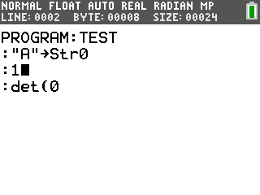

OS Editor Integrations
Overview
When the CelticCE hooks are installed, it will add a few useful features to the TI-OS editor which making programming, especially with Celtic commands, much easier. This section of the documentation will feature an overview of the two major features added to the TI-OS editor by CelticCE. Keep in mind that these features will only exist in the TI-OS editor when Celtic’s hooks are installed, as they are a part of CelticCE!
Command Preview
When hovering with the cursor over a valid Celtic command, the status bar will display the name of the command along with the command’s syntax. The format of the info will begin with the name of the command, followed by any additional arguments to be included in the det( call after the function identifier in the set of parenthesis. For example, if the user hovered over the FillScreen command, the first section of the status bar would display FillScreen(COLOR_L,COLOR_H). Next, listed after the first :, will be a list of additional TI-OS variables the command takes, like Ans or Str0. If the command takes no additional TI-OS variables but still has a return output, there will be an “NA” placeholder instead. Finally, after the last :, the status bar will list the variables that Celtic could write an output to for that command. Keep in mind that Celtic always has a chance of destroying Str9, as there is always the chance it will write an error to it if a command fails to run. A screenshot of the command preview feature in action is below:
Line / Byte Offset and Program Size
Another useful feature Celtic adds to the editor is the ability to check the current size of the program, along with the line and byte offset of the program the cursor is currently on. This can be useful for checking optimizations, and also for figuring out the line number or byte offset of a certain location for the SetParseLine and SetParseByte commands. You can view this information by pressing 2nd + enter when in the OS editor. A screenshot of the line / byte offset and program size info is below:
